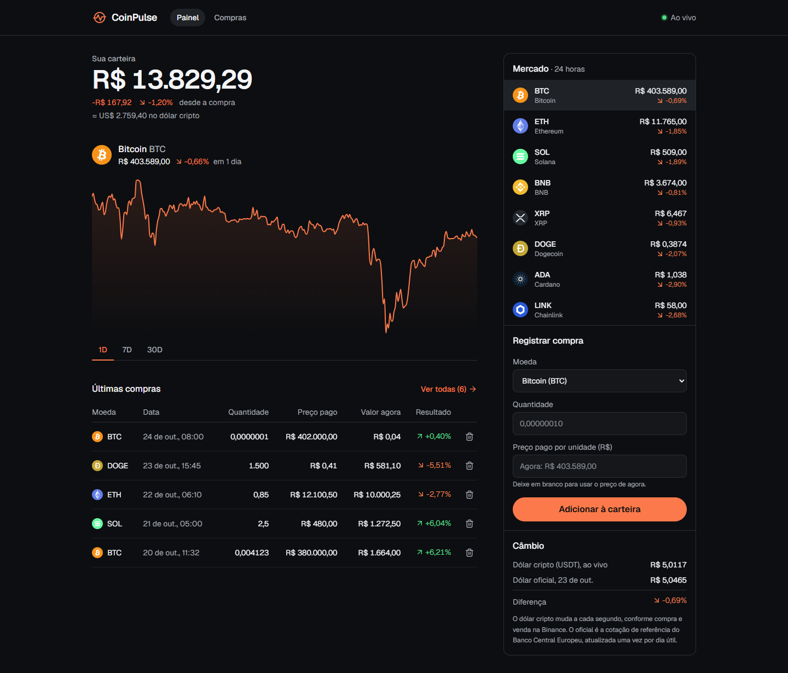

<PortfolioSummary />
<PriceChart />
<PurchaseTable />
Uma semana de React construindo, do zero e ao vivo, uma carteira de criptomoedas em tempo real.
Seminário de ReactCiência da ComputaçãoPUC Minas Poços de Caldas

A tela é uma função dos dados. Você muda os dados; o React redesenha a tela.
// JavaScript puro: você mexe na tela const el = document.querySelector('#total') el.textContent = formatar(total) el.classList.toggle('prejuizo', total < 0) // ...e lembra de fazer isso em // todo lugar que o total aparece
Imperativo: como mudar a tela, passo a passo.
// React: você descreve a tela function Total({ total }) { return ( <p className={total < 0 ? 'down' : 'up'}> {formatar(total)} </p> ) }
Declarativo: como a tela deve ser para cada valor.
const moedas = ['BTC', 'ETH', 'SOL'] return ( <ul className="lista"> {moedas.map((m) => ( <li key={m}>{m}</li> ))} </ul> )
{ } abre JavaScript dentro do HTML: variáveis, contas, mapclassName no lugar de class porque class já é palavra do JavaScriptkey em toda lista para o React saber qual item mudouO app é um quebra-cabeça de funções. Cada peça recebe dados pelas props.
// Quem usa passa a prop... <Change percent={variacao} /> // ...e o componente recebe function Change({ percent }) { return <span>{percent}%</span> }
Props descem de pai para filho, e o filho não pode alterá-las.
const [compras, setCompras] = useState([]) function adicionar(compra) { // nunca: compras.push(compra) setCompras([...compras, compra]) }
useState devolve duas coisas: o valor atual e a função que troca o valor.
Chamou o set? O React redesenha esse componente e os filhos dele, e só altera na tela o que mudou.
Por isso criamos um array novo em vez de usar push: o React compara o antigo com o novo para saber se algo mudou.
useEffect(() => { const socket = new WebSocket(url) socket.onmessage = (e) => setPrecos(...) return () => socket.close() // cleanup }, [url]) // roda de novo se url mudar
Tudo que não é desenhar a tela vai num efeito: API, WebSocket, localStorage, timers.
O cleanup desfaz o que o efeito fez. Sem ele, cada vez que o componente monta abre uma conexão nova, e elas se acumulam.
A lista no final diz quando o efeito roda de novo.
Do React
Nossos, criados durante a semana
Regra: chame hooks sempre no topo do componente, nunca dentro de if ou de loops.
Com o react-router, a URL decide qual página aparece, e o navegador não recarrega.
/Painel: total, gráfico e mercado/compras?moeda=BTCTodas as compras, com o filtro guardado na URL/qualquer-coisaPágina 404rfc criam um componente inteiro.// Ctrl+Shift+P → "Open User Settings (JSON)" { "editor.formatOnSave": true, "editor.defaultFormatter": "esbenp.prettier-vscode", "editor.linkedEditing": true, "emmet.includeLanguages": { "javascript": "javascriptreact" } }
linkedEditing renomeia a tag de fechamento junto. Emmet: ul>li*3 + Tab no JSX.
| Ctrl P | Abrir arquivo pelo nome |
| Ctrl D | Selecionar a próxima ocorrência |
| Alt ↑ ↓ | Mover a linha |
| Shift Alt ↓ | Duplicar a linha |
| F2 | Renomear em todos os arquivos |
| F12 | Ir para a definição |
| Ctrl ` | Abrir o terminal |
| Ctrl Shift P | Paleta de comandos |
map e key. O painel na tela com dados fixos.useState, formulário e por que 0.1 + 0.2 não dá 0.3.useEffect, localStorage e WebSocket com preços ao vivo.useRef e o câmbio do dólar.# precisa do Node 20 ou mais novo: node -v
npm create vite@latest coinpulse -- --template react
cd coinpulse
npm install
npm run dev
← → navegar · F tela cheia